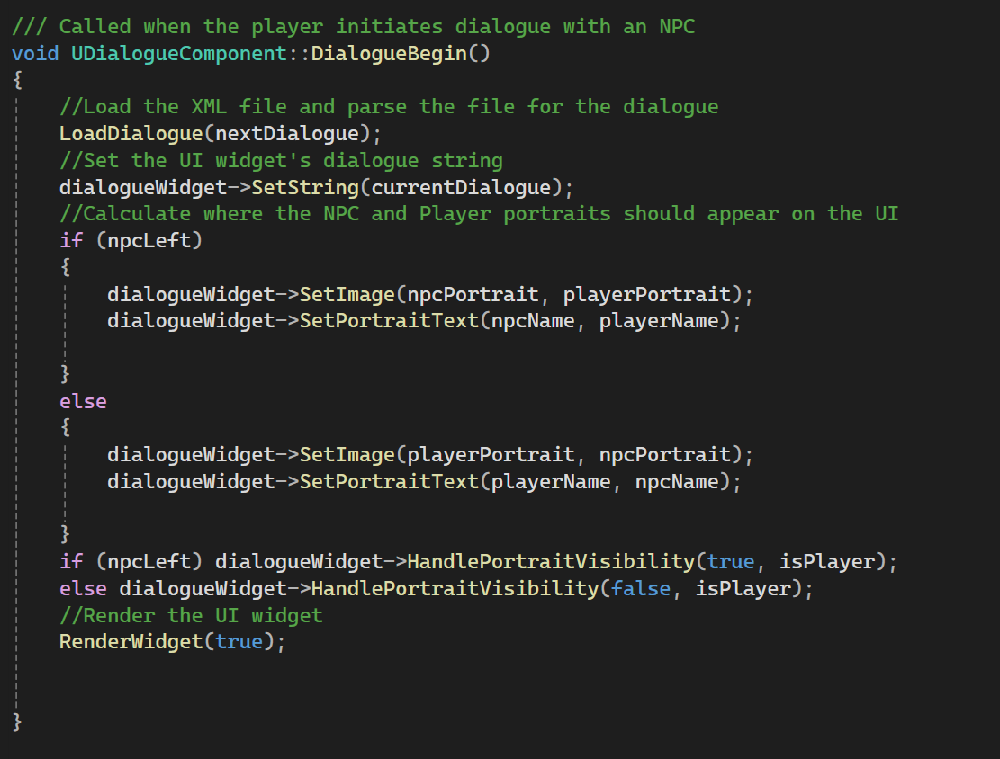
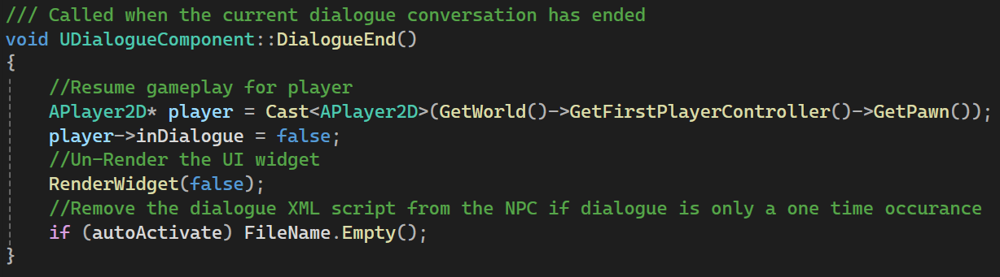
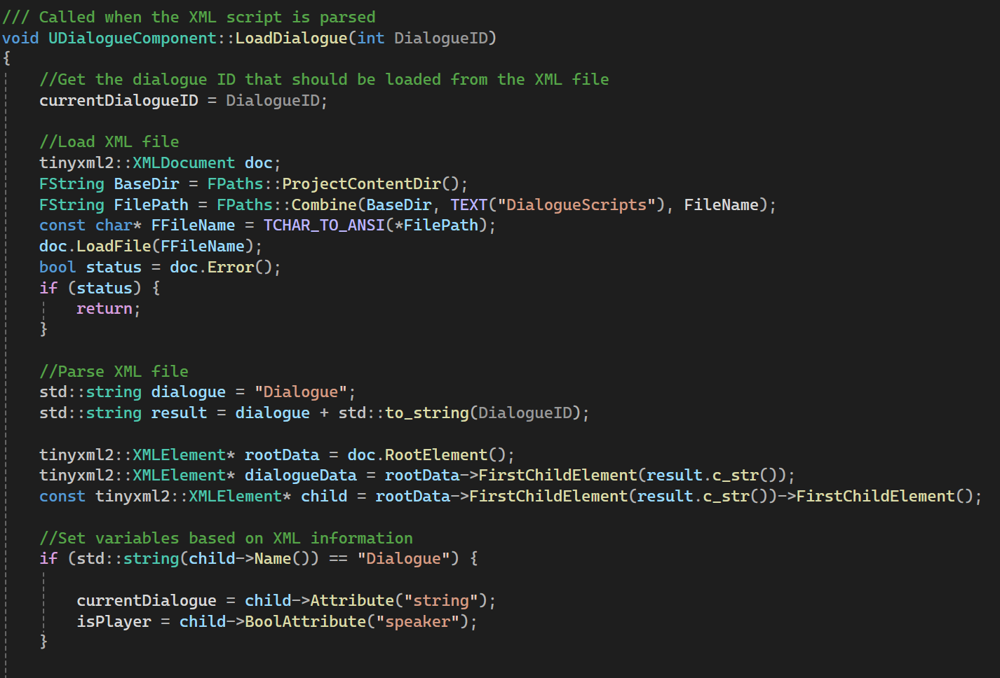
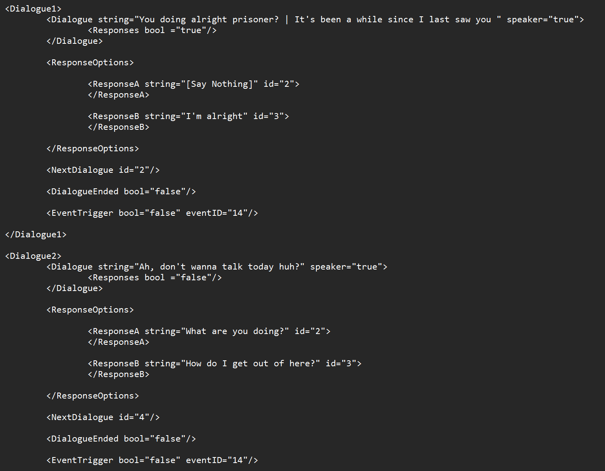
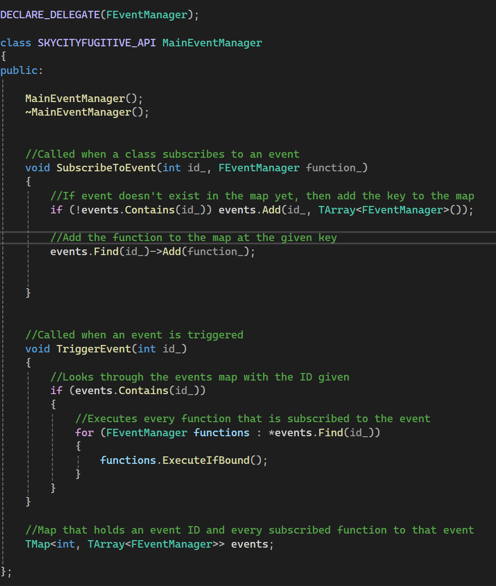

Game Developer | Programmer | Designer
Unreal Engine, Aseprite, C++ and Blueprint
Programmer / Designer / UI Artist, Level Designer, Art Designer
The goal of this demo is to showcase the three main systems; the dialogue system, the soulslike respawning system, and the event system. I also wanted to challenge myself with the art so I made all of the character art in the game including the animations.
Sky City Fugitive is a prototype that I made on my own for my Capstone project for Humber's Game Programming Program. I worked on this project for 12 weeks with the goal in mind to learn how to create many different systems and incorporate them into a prototype. I challenged myself by creating the project in UE5 despite it being a 2D game and I'm glad I did because I learned different tools and tricks that I didn't know before.
I made the dialogue component that reads and parses an XML file that has dialogue string data in it. The component also calculates the responses that should be available to the player based on the dialogue that the NPC said and it also calculates the dialogue that should be played next based on the response the player chooses. This dialogue component was created in C++ and communciates with blueprint code perfectly. This system is also able to trigger events during dialogue if necessary.
The respawn system I made for this project is similar to the respawn system that can be found in other soulslikes. When the player kills an enemy that enemy stays dead, even when the player transitions to another level. If the player dies or uses a "Recharge Station", then all enemies apart from boss enemies will respawn. If the player dies they respawn at the last "Recharge Station" they used. Using a "Recharge Station" also heals the player and replenishes ammo and equipment. The way I coded this system is by creating a game instance that persists across levels and giving that game instance a map. This map keeps track of each enemy in the game and whether or not they are dead. On death, the individual enemy accesses this map and updates it so the map knows it is dead. Every time a level is created the enemies will check the map and see whether they should be dead and if so, they are instantly deleted. When the player uses a "Recharge Station" the map sets each entry to false so that the enemies can respawn.
I also created an event manager for this project. This event manager also exists within the game instance and any class can subscribe to an event at any time. When a class is subscribed to an event, a function from that class is given to the event manager. Any event can be triggered at any moment by another class or by the dialogue system, and if an event is triggered then every class that is subscribed to that event will execute the function it subscribed with.
    